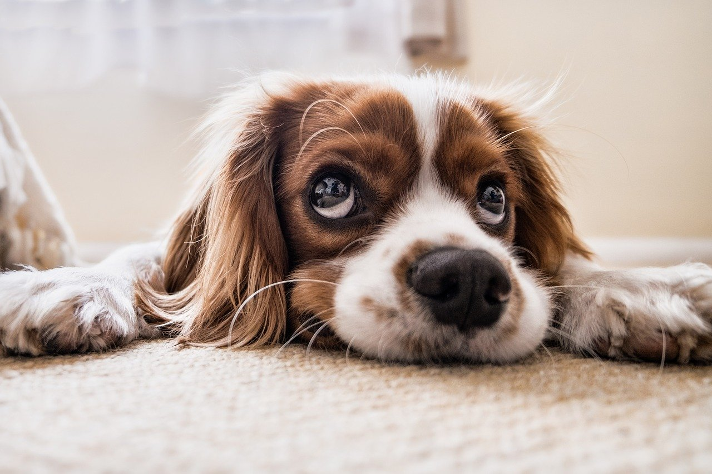

Kindness to animals is one of the most beautiful virtues of a good soul.
At the Save Life farm in Klemetsrud, we have at any given time about 20–30 cats and 10–15 dogs that need new homes. Every week new dogs and cats move in and out of the farm.
The association also has about 35 foster homes for cats, distributed around the country. We also have some foster homes for dogs that for various reasons do not work at the Save Life farm. The association is a workplace for 23 people, some full-time and some part-time. The majority of the staff work with the animals on the farm.
The association for animal relocation has no permanent public support. We spend a lot of time writing applications to various foundations in the hope that we can be awarded funds for various projects on the farm. We are dependent on donations from companies and individuals, grants and bequests to be able to continue our work. We rent the farm we use from the Oslo municipality. So, if you can, please help us!